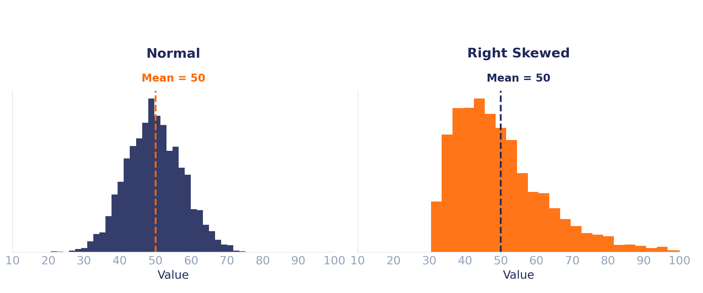
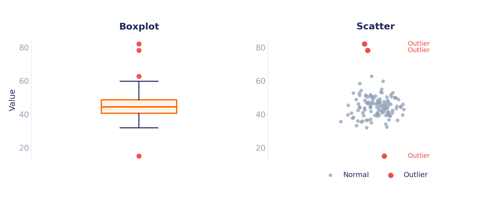
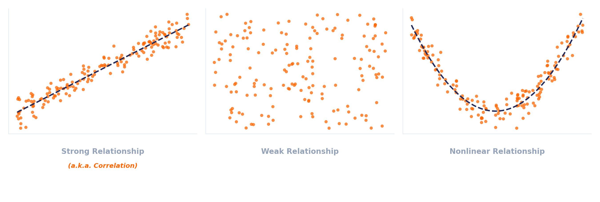

EDA یعنی قبل از اینکه بخواهیم یک مدل Machine Learning آموزش دهیم، ابتدا داده را بشناسیم.
هدف EDA پاسخ دادن به سؤالهایی مانند این است:
مدلهای Machine Learning فقط از داده یاد میگیرند. اگر داده کیفیت مناسبی نداشته باشد:
به همین دلیل تقریباً همهی پروژههای Machine Learning با EDA شروع میشوند.
در این هفته با سه ابزار اصلی آشنا میشوید؛ هر کدام نقش متفاوتی دارند، اما در کنار هم به ما کمک میکنند داده را بهتر درک کنیم.
یک Data Scientist هیچوقت فرض نمیکند داده کاملاً درست است. هر ستون را تا زمانی که بررسی نکردهایم، مشکوک در نظر میگیریم. ممکن است داده:
تقریباً روی هر دیتاست، همین مسیر را طی میکنیم؛ این چکلیست را بارها در طول دوره استفاده خواهیم کرد.
Shape
Data Types آیا نوع هر ستون درست است؟
گاهی نبودن اطلاعات، خودش یک اطلاعات مهم است؛ مثلاً مشتری درآمدش را اعلام نکرده، یک سنسور هنگام اندازهگیری خراب بوده، یا بیمار بعضی آزمایشها را انجام نداده است.
هنگام بررسی Missing Values معمولاً این سؤالها را میپرسیم:
| Name | Age | Salary |
|---|---|---|
| Ali | 25 | 5000 |
| Sara | NaN | 6200 |
| Reza | 31 | NaN |
| Mina | NaN | NaN |
خانههای قرمز، سلولهای مقدارهای گمشده هستند.
فرض کنید میانگین قد افراد برابر با ۱۷۰ سانتیمتر است؛ این عدد به تنهایی چیز زیادی به ما نمیگوید. ممکن است بیشتر افراد واقعاً نزدیک ۱۷۰ باشند، یا نصف افراد ۱۵۰ و نصف دیگر ۱۹۰ باشند. در هر دو حالت میانگین یکسان است؛ اما داده کاملاً متفاوت است.
در بررسی Distribution به دنبال چه چیزهایی هستیم؟

گاهی چند مشاهده کاملاً با بقیه متفاوت هستند؛ به این نقاط Outlier میگوییم. مثال: سن = ۲۵۰ سال، قد = ۴ متر، درآمد = ۵۰ میلیون دلار.
ممکن است یک Outlier:

اول دلیل وجود Outlier را بفهمید، بعد دربارهی حذف آن تصمیم بگیرید.
تا اینجا هر ستون را جداگانه بررسی کردیم؛ اما سؤالهایی مانند «آیا با افزایش تجربه، حقوق هم افزایش پیدا میکند؟» یا «آیا متراژ خانه روی قیمت اثر دارد؟» فقط با نگاهکردن به رابطهی بین دو ستون جواب داده میشوند.
گاهی این رابطه:
